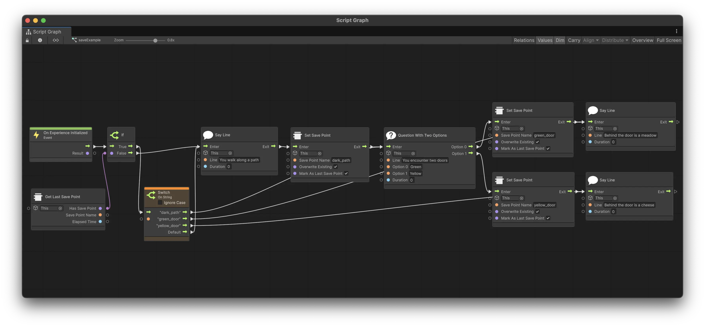

Save System
The Save System allows you to track user progress through your Meadow experience by creating save points, measuring elapsed time, and storing custom data. This system is perfect for creating checkpoint-based experiences like urban audio walks, or building RPG-style games where user progress needs to be preserved between sessions.
The save data persists across app sessions and is automatically saved when the user closes the app, goes to the background, or at regular intervals during gameplay.
Save System Properties:
Configuration
- Save On Start:
bool- Automatically starts tracking when the experience begins. - Auto Save:
bool- Enables automatic saving at regular intervals. - Auto Save Interval:
float- Time in seconds between automatic saves (default: 15 seconds).
Automatic Save Triggers The system automatically saves progress when:
- The application is closed or paused
- The experience object is disabled
- Auto save interval is reached (if enabled)
Using the Save System
- Add the
SaveManagercomponent to any game object in your prefab. - Configure the auto-save settings based on your experience needs.
- Use the visual scripting nodes to create save points and track progress throughout your experience.
- The system will automatically use your experience ID.
Save System Features
Save Points: Create named checkpoints in your experience that track elapsed time from when they were set.
Custom Data Storage: Save custom data (strings, numbers) associated with your experience.
Automatic Persistence: All data is automatically saved to device storage and restored when the experience is loaded again.
Last Save Point Tracking: The system remembers which save point was set most recently, useful for implementing “Continue from where you left off” functionality.
Create your save system logic
The Save System comes with a range of nodes for managing user progress. All nodes are found in XREF > SaveSystem among the visual scripting nodes.
Here is an example of a basic save system implementation in use in a RPG-style game:

In this example, the experience starts by creating an initial save point, then sets checkpoints as the user progresses through the game.
List of nodes:
Start Experience Saving - Begins tracking the overall experience progress and creates a save point for total experience time.
- Game Object:
GameObject- The game object with the SaveManager component. Usethisto reference the game object the visual scripting is on.
Set Save Point - Creates a named save point that tracks elapsed time from the moment it was set.
- Game Object:
GameObject- The game object with the SaveManager component. Usethisto reference the game object the visual scripting is on. - Save Point Name:
string- A unique name for this save point (e.g., “level1_complete”, “checkpoint_forest”). - Overwrite Existing:
bool- If true, overwrites any existing save point with the same name. If false, ignores the request if a save point already exists. - Mark As Last Save Point:
bool- If true, marks this as the most recent save point for “continue” functionality.
Has Save Point - Checks if a save point with the specified name exists and returns its elapsed time.
- Game Object:
GameObject- The game object with the SaveManager component. Usethisto reference the game object the visual scripting is on. - Save Point Name:
string- The name of the save point to check for. - Has Save:
bool- Output indicating whether the save point exists. - Elapsed Time:
float- Output showing the elapsed time for the save point (in seconds).
Get Save Point Elapsed Time - Retrieves the elapsed time for a specific save point.
- Game Object:
GameObject- The game object with the SaveManager component. Usethisto reference the game object the visual scripting is on. - Save Point Name:
string- The name of the save point to query. - Elapsed Time:
float- Output showing the elapsed time for the save point (in seconds), or 0 if the save point doesn’t exist.
Get Last Save Point - Gets information about the most recently set save point.
- Game Object:
GameObject- The game object with the SaveManager component. Usethisto reference the game object the visual scripting is on. - Has Save Point:
bool- Output indicating whether any save point exists. - Save Point Name:
string- Output showing the name of the last save point. - Elapsed Time:
float- Output showing the elapsed time for the last save point (in seconds).
Get All Save Points - Returns a list of all save point names that have been created.
- Game Object:
GameObject- The game object with the SaveManager component. Usethisto reference the game object the visual scripting is on. - Save Point Names:
List<string>- Output containing all save point names.
Save All Save Points - Manually triggers a save of all current progress (normally happens automatically).
- Game Object:
GameObject- The game object with the SaveManager component. Usethisto reference the game object the visual scripting is on.
Custom Data Storage
In addition to the visual scripting nodes, the SaveManager component provides methods for storing custom data:
**SaveCustomData
**GetCustomData
This is useful for storing game state, user preferences, or any other data that should persist between sessions.
Common Use Cases
Checkpoint System: Use Set Save Point when players reach important milestones, then use Get Last Save Point when they restart to continue from their progress.
Level Completion Tracking: Create save points for each completed level and use Has Save Point to check what content the user has unlocked.
Time-Based Saving: Use Get Save Point Elapsed Time to return to a specific point in for example an audio track.
Session Restoration: Use the automatic saving features to seamlessly restore user progress when they return to your experience.
Best Practices
Meaningful Names: Use descriptive save point names like “tutorial_complete” or “boss_defeated” rather than generic names like “save1”.
Strategic Placement: Set save points at natural breakpoints in your experience - after tutorials, level completions, or major story beats.
Progress Validation: Use Has Save Point to check if users have completed prerequisite content before allowing access to new areas.
Please note: Save data is stored locally on the user’s device using Unity’s PlayerPrefs system. Data will persist between app sessions but may be lost if the user clears their app data or uninstalls the app.